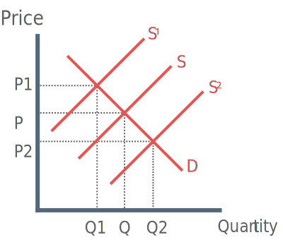

Buffer Stock: An intervention system that aims to limit the fluctuations of the price of a commodity
Government failure: When government intervention to correct a market failure does not improve the allocation of resources or leads to a worsening of the situation.
Economies of Scale: Where an increase in the scale of production leads to reductions in average total costs for a firm.
Theory
What is a buffer stock scheme?
Buffer stock schemes are an age-old solution to price stabilisation. Evidence can be found in the old testament of Egyptians using “ever-normal granary”. Benjamin Graham also presented a buffer stock in his book storage and stability to resolve the issues of the Great Depression.
Buffer Stock Schemes are typically used by the government on commodities in order to prevent wild price fluctuation. Below is an explanation of how this is done.

In the diagram above, the desired price and quantity of goods in the buffer stock scheme is P - Q
Lets assume the buffer stock is for carrots. If there is a bumper harvets for carrots and the supply curve shifts right (S - S2), the government must buy up the quantity Q - Q2 in order to restore the market to the equilibrium level (P - Q).
If there is a bad harvest the following month and the supply curve for carrots shifts left (S - S1), the government must sell the quantity Q - Q1 to restore market equilibrium.
Advantages of a Buffer Stock Scheme
1) Profit for producer regardless of bumper harvest or poor harvest
The government will always buy the producers stock in the event of excess supply, thus ensuring profit and stable living.However critics argue that they distort the operation of the free market and prevent the price mechanism working effectively. This may create moral hazard if farmers choose to be inefficient.
2) Price stability will improve business confidence
Farmers will be able to effectively forecast their production and sales. This will improve confidence and result in investment in capital. Investment in new technology effectively exploits technical economies of scale.
3) Government (or administration) can make profit
If government buys during bumper crop and then sells at higher prices in times of shortage, it can make profit. The government could use this revenue to allocate elsewhere in the economy or to finance the buying of more efficient farming equipment for farmers.
Disadvantages of a Buffer Stock Scheme
1) Administrative costs of scheme may be high
The cost of buying, storing and employing people to manage the scheme will be costly. Some commodities cannot easily be stored because they are perishable. This could result in huge losses for the government.
2) Higher Risk / Unpredictable
System relies on starting with a good harvest, without stocks in the system it is not possible to react to a poor harvest. If the crop is a continually good yield, the government may run out of money as they are always forced to buy stock.
3) Encourages Inefficiency
If producers can always be sure of profit they are more likely to adopt an 'easy life' attitude, resulting in inefficiency
Evaluation
Buffer stocks do not prevent the initial problem from arising
Critics argue that they distort the operation of the free market and prevent the price mechanism working effectively
A buffer stock could be quite effective if producers and government choose to reinvest profits
It also depends on the attitudes of the producers i.e. if producers choose to be inefficient or not.